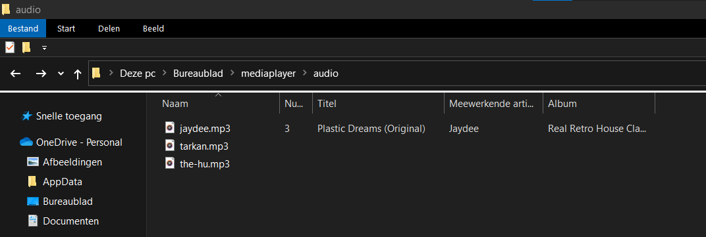

Kies een nummer!
Volume
0
200%
Headphones
links
rechts
Filter
--
++
We gaan een mediaplayer maken!
We gaan een simpele mediaplayer leren programmeren waarin je zelf mp3 bestanden in kan afspelen en manipuleren.
Hiervoor hebben we 3 codetalen nodig
We hebben eerst en vooral een code-editor nodig. In deze workshop gaan we werken met Visual Studio Code
Je ingestelde browser zal nu een blanco webpagina openen.
Tijd om ze in te vullen!
Tijd om de website in te vullen. Dan krijg je meer als een blanco webpagina
Dit is de basis structuur waar we in verder werken, vergeet je code niet op te slaan (file->save of ctr+s)
Dit bevat de stijlen die we zullen nodig hebben om onze media-player de juiste opmaak te geven.
Vergeet niet op te slaan.
Als je alles juist hebt gedaan zou het er zo moeten uit zien.
De kleur onder je Mediaplayer balk zou moeten veranderen naar de kleur die je hebt gekozen.
als je een pop-up als deze te zien krijgt heb je succesvol je script uitgevoerd, je mag deze lijn hierna weer verwijderen
In combinatie met de styling die we al eerder in css hebben toegevoegd zou deze er nu moeten uitzien zoals hieronder
Deze code bevat onze constructor. We creeren ook events, namelijk het luider zetten van de speakers, het pannen van links naar rechts en een filter.
Als je meer info wenst kan je altijd eens piepen op MDN
Ga via je verkenner naar de map audio en plak hier enkele mp3 bestanden in.
Je kan gratis royalty vrije mp3 bestanden downloaden op pixabay
In deze tutorial werken we met Happy Birthday, Matrix en blackbox
Als je je eigen mp3 bestanden wilt gebruiken ga je de labels in je index.html-bestand moeten aanpassen zodat de naam overeenkomt met de naam van de audiofiles.
hieronder een aangepast voorbeeld
de mp3-files hun namen zijn in dit geval beyonce, drake en billyeyelash
Plak onderstaande code onderaan in je app.js-bestand.
Met deze code initialiseren we onze applicatie en linken we het script aan de buttons die we in onze index.html-pagina hebben gemaakt
Plak onderstaande code onder je cacheElements functie, dit zijn click-en input events.
Dit zijn functies die onze buttons effectief iets laten doen.
Plak onderstaande code onder je registerListeners functie
Proficiat met je eerste zelfgemaakte webapplicatie!